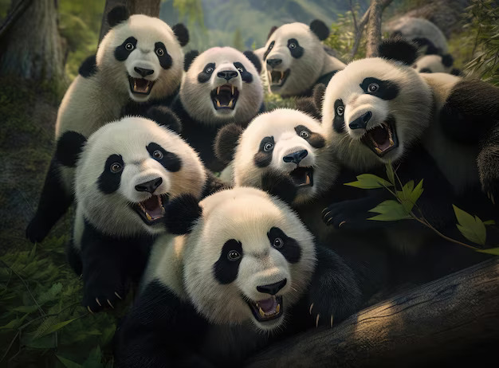

GIANT PANDA BEAR
-

Pandas live mainly in temperate forests high in the mountains of southwest China, where they subsist almost entirely on bamboo.
-
They must eat around 26 to 84 pounds of it every day, depending on what part of the bamboo they are eating. They use their enlarged wrist bones that function as opposable thumbs.
-
These bears are excellent tree climbers despite their bulk.
-
A newborn panda is about the size of a stick of butter—about 1/900th the size of its mother—but females can grow up to about 200 pounds, while males can grow up to about 300 pounds as adults.